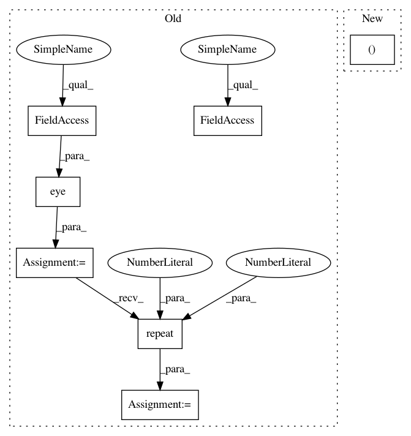

7c3d0a5ea7405fe74cc31f5553f7c04d9804d42e,pytorch/pytorchcv/models/isqrtcovresnet.py,Covpool,forward,#Any#Any#,21
Before Change
w = x.data.shape[3]
M = h * w
x = x.reshape(batch_size, channels, M)
I_hat = (-1. / M / M) * torch.ones(M, M, device=x.device) + (1. / M) * torch.eye(M, M, device=x.device)
I_hat = I_hat.view(1, M, M).repeat(batch_size, 1, 1).type(x.dtype)
y = x.bmm(I_hat).bmm(x.transpose(1, 2))
ctx.save_for_backward(input, I_hat)
return y
After Change
@staticmethod
def forward(ctx, x):
batch, channels, height, width = x.size()
n = height * width
xn = x.reshape(batch, channels, n)
identity_bar = ((1.0 / n) * torch.eye(n, dtype=xn.dtype, device=xn.device)).unsqueeze(dim=0).repeat(batch, 1, 1)
In pattern: SUPERPATTERN
Frequency: 3
Non-data size: 7
Instances
Project Name: osmr/imgclsmob
Commit Name: 7c3d0a5ea7405fe74cc31f5553f7c04d9804d42e
Time: 2019-03-02
Author: osemery@gmail.com
File Name: pytorch/pytorchcv/models/isqrtcovresnet.py
Class Name: Covpool
Method Name: forward
Project Name: arraiy/torchgeometry
Commit Name: 38127f47b9aae69f1ac7fb5644c56e61aaeb1c89
Time: 2019-01-11
Author: kaplanonu@gmail.com
File Name: torchgeometry/imgwarp.py
Class Name:
Method Name: warp_affine
Project Name: cornellius-gp/gpytorch
Commit Name: aaf2dd66651d04bb8a615ec288155aa28d064abb
Time: 2019-10-24
Author: darbour26@gmail.com
File Name: gpytorch/kernels/index_kernel.py
Class Name: IndexKernel
Method Name: _eval_covar_matrix
Project Name: osmr/imgclsmob
Commit Name: 7c3d0a5ea7405fe74cc31f5553f7c04d9804d42e
Time: 2019-03-02
Author: osemery@gmail.com
File Name: pytorch/pytorchcv/models/isqrtcovresnet.py
Class Name: Covpool
Method Name: forward